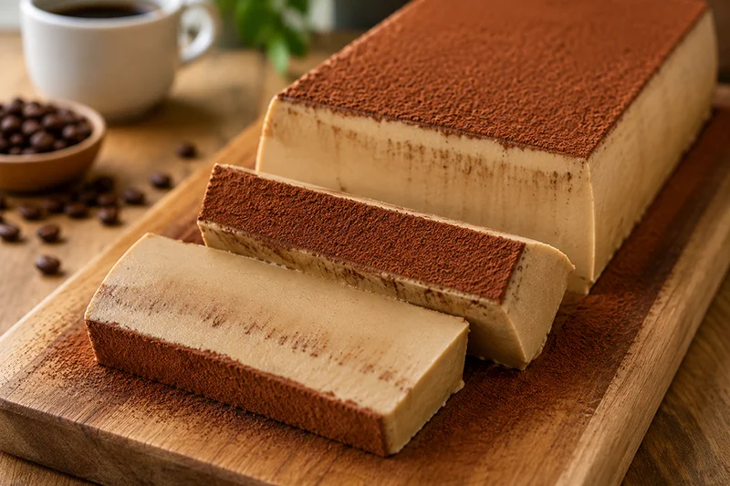

Receta saludable
Pudin cremoso de café
El pudin cremoso de café combina una textura suave y sedosa con el aroma del café recién preparado. Un postre sin horno, fácil de elaborar y perfecto para servir bien frío.
Ingredientes
- 200 ml de café espresso o café muy intenso
- 800 ml de leche semidesnatada
- 60 g de maicena
- 6 g de gelatina neutra en polvo (o 3 hojas)
- Endulzante al gusto (opcional)
- 1 cucharadita de extracto de vainilla (opcional)
- Cacao puro en polvo para decorar
Preparación
- Hidrata la gelatina siguiendo las indicaciones del fabricante.
- Mezcla el café, la leche, la maicena, la vainilla y el endulzante hasta que no queden grumos.
- Calienta la mezcla a fuego medio sin dejar de remover hasta que espese ligeramente.
- Retira del fuego y añade la gelatina hidratada, mezclando hasta que se disuelva por completo.
- Vierte la preparación en un molde rectangular ligeramente humedecido.
- Deja enfriar a temperatura ambiente y refrigera durante al menos 6 horas.
- Desmolda con cuidado y espolvorea una capa uniforme de cacao puro justo antes de servir.
Consejo práctico
Para conseguir un acabado perfecto, espolvorea el cacao con un colador de malla fina justo antes de servir. Obtendrás una cobertura uniforme y aterciopelada que realzará tanto el aspecto como el sabor del postre.